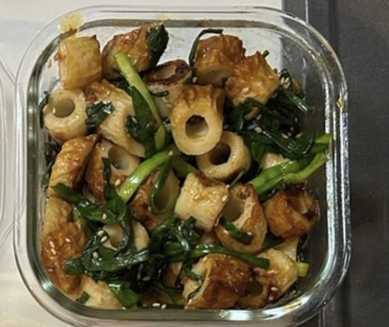

実数Kは存在しない
Home
News
Recipe
Profile
Link
やみつきニラちくわ
Date: 2024-12-07
材料
作り方
メモ

材料
ちくわ: 2～3袋 (8～10本)
ニラ: 1束 (2～3cmに切る)
ごま油: 大さじ1
油: 適量
(白ゴマ: 適量)
☆ 水: 大さじ1
☆ 料理酒: 大さじ1
☆ オイスターソース: 小さじ2
☆ 豆板醤: 小さじ1
☆ 砂糖: 小さじ1
作り方
ちくわを斜めに切り、大さじ1の油で炒める。
☆を混ぜた調味料を加える。
ニラを加え、最後にごま油 (あれば白ゴマも) を加える。
メモ
マヨネーズを入れても美味しいかも。